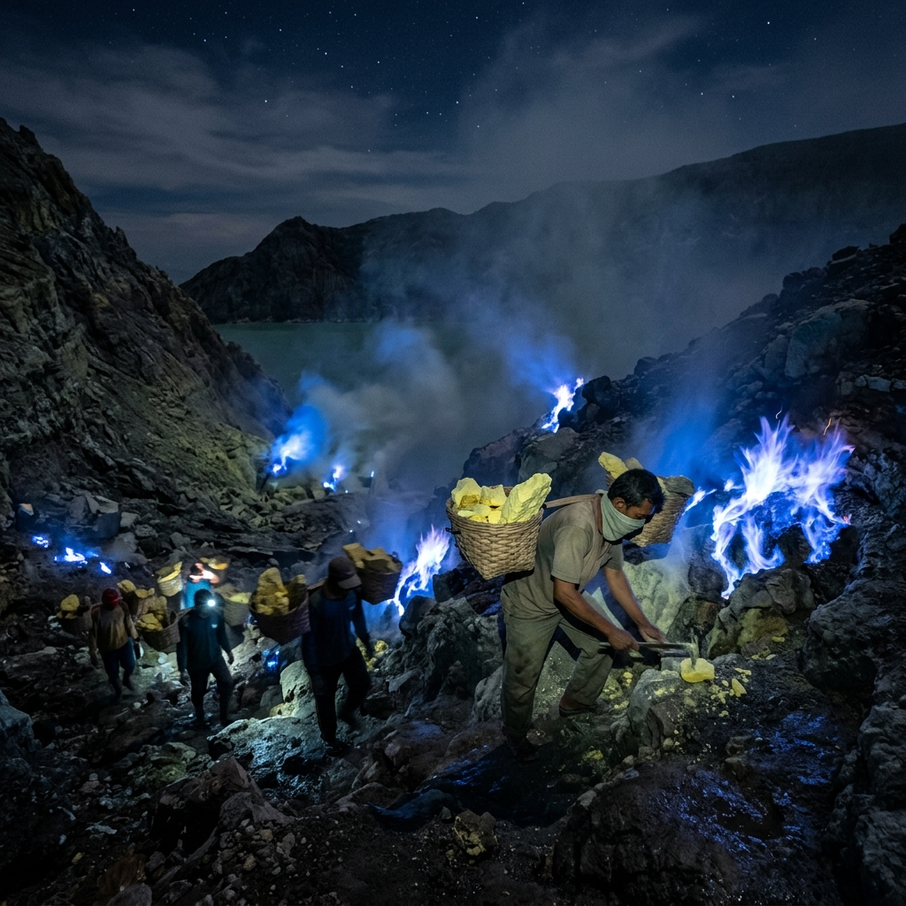

Kawah Ijen adalah kawasan gunung berapi di perbatasan Banyuwangi dan Bondowoso yang terkenal karena fenomena blue fire dan danau kawah asam terbesar di dunia. Bersama Bromo, kawah ini menjadi ikon wisata Jawa Timur.
Ringkasan Inti
- Kawah Ijen memiliki danau kawah dengan tingkat keasaman sangat tinggi dan sering disebut sebagai salah satu danau kawah asam terbesar di dunia.
- Fenomena blue fire hanya dapat disaksikan pada dini hari, umumnya sebelum matahari terbit.
- Kawasan ini juga dikenal sebagai lokasi aktivitas penambangan belerang tradisional.
- Kawah Ijen sering dipadukan dengan Bromo dalam satu paket perjalanan wisata Jawa Timur.
- Pendakian memerlukan persiapan fisik dan perlengkapan khusus karena jalur menanjak dan berbatu.
Apa Itu Kawah Ijen?
Kawah Ijen adalah kawah aktif di kompleks Gunung Ijen yang berada di kawasan Cagar Alam Kawah Ijen, meliputi wilayah Kabupaten Banyuwangi dan Bondowoso, Jawa Timur.
Kawah ini terbentuk dari aktivitas vulkanik dan memiliki danau kawah berwarna toska kehijauan dengan tingkat keasaman yang sangat tinggi. Menurut data yang umum dirujuk oleh lembaga pemantauan gunung api dunia, danau kawah Ijen kerap disebut sebagai salah satu danau kawah paling asam di dunia berdasarkan pengamatan sepanjang beberapa dekade terakhir. Kawasan ini juga berfungsi sebagai lokasi penambangan belerang tradisional yang masih berlangsung hingga sekarang, menjadikannya salah satu bentang alam vulkanik dengan aktivitas manusia paling khas di Indonesia.
Bagi wisatawan, Kawah Ijen menawarkan dua daya tarik utama: pemandangan danau kawah pada siang hari dan fenomena blue fire yang hanya tampak pada kondisi gelap dini hari.
Mengapa Blue Fire di Kawah Ijen Begitu Terkenal?
Blue fire adalah nyala api biru yang muncul dari pembakaran gas belerang bersuhu tinggi saat bersentuhan dengan udara, dan fenomena ini hanya terlihat jelas di kegelapan sebelum fajar.
Fenomena ini terjadi karena gas sulfur yang keluar dari celah kawah terbakar secara alami saat bertemu oksigen di udara terbuka. Nyala api ini tidak berasal dari lava, melainkan dari pembakaran gas, sehingga warnanya biru terang dan hanya dapat teramati saat langit masih gelap.
Blue fire di Kawah Ijen dikenal sebagai salah satu dari sedikit lokasi di dunia yang secara konsisten menampilkan fenomena serupa, bersama beberapa kawah vulkanik lain seperti di Islandia. Karena keterbatasan waktu pengamatan, wisatawan umumnya disarankan mulai pendakian pada tengah malam agar tiba di titik pengamatan sebelum fenomena ini memudar seiring munculnya cahaya matahari.

Pesona Blue Fire di Kawah Ijen menjadi daya tarik langka berskala internasional yang hanya bisa disaksikan menjelang fajar.
Bagaimana Cara Menuju dan Mendaki Kawah Ijen?
Cara paling umum menuju Kawah Ijen adalah melalui pos Paltuding di Banyuwangi, dilanjutkan dengan pendakian sekitar dua hingga tiga jam menuju bibir kawah.
Sebagian besar wisatawan mengakses kawasan ini melalui jalur Paltuding karena memiliki fasilitas dasar seperti area parkir dan pos pendaftaran. Jalur pendakian didominasi medan menanjak dengan permukaan berbatu dan berpasir vulkanik, sehingga alas kaki yang mendukung dan senter menjadi perlengkapan penting.
Waktu pendakian yang umum disarankan adalah dini hari, biasanya dimulai sekitar tengah malam hingga pukul satu dini hari, agar wisatawan dapat tiba di area blue fire sebelum cahaya matahari muncul dan fenomena tersebut memudar. Setelah menyaksikan blue fire, banyak wisatawan tetap berada di kawasan puncak untuk menikmati pemandangan danau kawah saat matahari terbit.
Apa Saja Faktor yang Perlu Diperhatikan Sebelum Berkunjung?
Faktor utama yang perlu diperhatikan adalah kondisi cuaca, kesiapan fisik, penggunaan masker gas, serta status aktivitas vulkanik yang dapat berubah sewaktu-waktu.
Beberapa hal penting yang perlu dipersiapkan:
- Kondisi udara di sekitar kawah dapat mengandung gas belerang yang menyengat, sehingga masker gas sangat dianjurkan.
- Suhu dini hari di kawasan ini cukup dingin, sehingga pakaian hangat menjadi kebutuhan dasar.
- Status buka atau tutupnya jalur pendakian dapat berubah mengikuti pemantauan aktivitas vulkanik oleh otoritas terkait, sehingga sebaiknya dicek terlebih dahulu sebelum keberangkatan.
- Fisik yang cukup kuat diperlukan karena medan menanjak sepanjang perjalanan menuju kawah.
Apa Kesalahan Umum yang Sering Dilakukan Wisatawan?
Kesalahan umum yang sering terjadi adalah berangkat terlalu siang sehingga melewatkan fenomena blue fire, serta tidak membawa perlengkapan pelindung pernapasan.
Wisatawan yang berangkat setelah dini hari umumnya hanya sempat melihat danau kawah tanpa menyaksikan blue fire, karena fenomena ini memudar begitu langit mulai terang. Kesalahan lain yang sering terjadi adalah mengabaikan penggunaan masker gas, padahal paparan gas belerang dalam durasi lama dapat mengganggu pernapasan, terutama bagi wisatawan dengan riwayat gangguan pernapasan.
Bagaimana Kawah Ijen Terhubung dengan Bromo sebagai Ikon Wisata Jatim?
Kawah Ijen dan Bromo sering dipadukan dalam satu rute perjalanan karena keduanya berada di Jawa Timur dan menawarkan pengalaman wisata gunung berapi yang saling melengkapi.
Bromo dikenal dengan pemandangan matahari terbit di atas lautan pasir, sementara Kawah Ijen menawarkan fenomena blue fire dan danau kawah asam. Banyak agen perjalanan menyusun paket gabungan Bromo-Ijen karena jarak tempuh antar keduanya memungkinkan wisatawan mengunjungi kedua lokasi dalam rangkaian perjalanan dua hingga tiga hari. Kombinasi ini menjadikan keduanya sebagai dua ikon wisata Jawa Timur yang paling sering direkomendasikan bersamaan.
Pembahasan lebih rinci mengenai perjalanan gabungan ini dapat dilihat pada artikel tentang paket wisata Bromo Ijen, tips memilih waktu terbaik ke Bromo dan Ijen, serta perbandingan karakter wisata kedua destinasi tersebut.
Kesimpulan
Kawah Ijen adalah destinasi vulkanik yang menonjol karena fenomena blue fire dan danau kawah asam, dan paling ideal dikunjungi dini hari dengan persiapan fisik serta perlengkapan yang memadai. Untuk pengalaman yang lebih lengkap, banyak wisatawan memadukan kunjungan ini dengan Bromo sebagai satu paket ikon wisata Jawa Timur.
FAQ
Blue fire adalah nyala api biru dari pembakaran gas belerang yang hanya terlihat jelas pada kondisi gelap dini hari di area Kawah Ijen.
Waktu terbaik adalah dini hari, umumnya dimulai sekitar tengah malam, agar wisatawan tiba di kawah sebelum fenomena blue fire memudar oleh cahaya matahari.
Kawasan ini umumnya aman selama mengikuti jalur resmi dan menggunakan masker gas, namun kondisi dapat berubah tergantung status aktivitas vulkanik sehingga informasi terkini perlu selalu dicek.
Bisa, banyak wisatawan memadukan kunjungan Bromo dan Ijen dalam satu rangkaian perjalanan karena kedua lokasi berada di kawasan Jawa Timur yang relatif berdekatan.
Perlengkapan yang umumnya disarankan meliputi masker gas, senter, pakaian hangat, dan alas kaki yang mendukung medan menanjak.